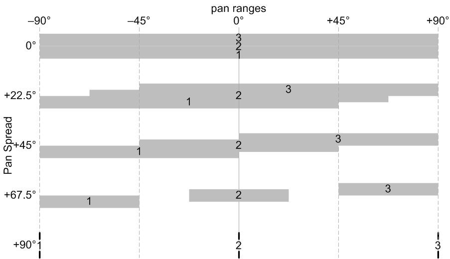

CONTROL pan spread
This controls how much stacked voices are spread out in the stereo field. This has no effect unless the voice count parameter is greater than 1.
This is expressed in degrees, representing the amount by which centered (mono) sounds are spread out by this parameter. When this is zero, all voices have the full pan range; when set to 90°, the outer voices are panned half way to the sides, and their instruments each have half the panning range; when set to 180°, the outer voices are forced all the way left and right, and the instrument pan controls do nothing.
|  |
Toolkit
This is contained in the voice stack cluster within the Control section.
Chroma panel
This is contained in the VOLUME section of the right panel, under the following parameter number:
|
|
This appears in the display as Pan Spread.
MIDI
This is accessed via NRPN 0,30.
Values
| MIDI | display | ||
| 0 | off | ||
| • • • |
• • • |
||
| 64 | 90° | (default) | |
| • • • |
• • • |
||
| 127 | 180° |